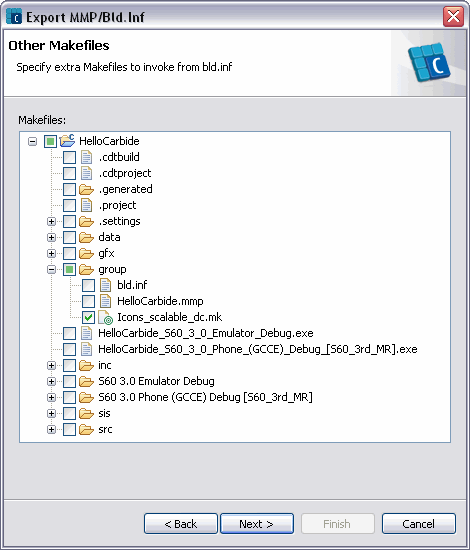
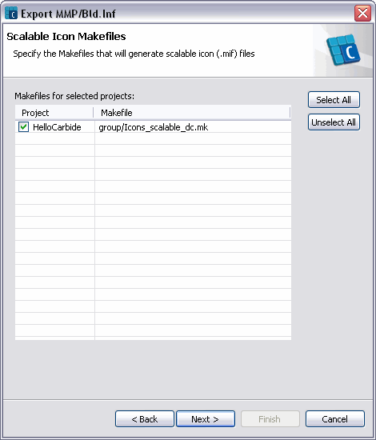

The command-line Symbian OS toolchain requires a component description file (Bld.Inf) and one or more project definition files (.mmp) to build a project. The export command allows you to create these files for your projects.
OR
Click Export from the pop-up menus of the C/C++ Projects and Navigator views to get a list of the available export wizards:
The build configurations chosen for a project are distinguished using guard macros in the MMP file. The guard macros are placed around the MMP file statements containing resources or build setting, only valid for a subset of the chosen build configurations.
There are cases where guard macros may not be able to distinguish between two build configurations. The export wizard shows a conflict when two such ambiguous build configurations are selected by the user.
The combination of build configurations which results in a conflict are as follows:
Any two build configurations that differ only in the build variant (UDEB/UREL). For example, "UIQ 3.0 Phone (GCCE) Debug" and "UIQ 3.0 Phone (GCCE) Release" configurations will result in a conflict, as they differ only in the build variant.
Any two build configurations, of which one is user-defined based on the other using the Manage option in the C/C++ Build properties view of the project.
For more information on managing build configurations, refer to the CDT user guide.
The wizard will change the build settings in the MMP
file based on the chosen build configuration. If more than one build
configuration which require different build settings are chosen, guard macros
are used to determine the build settings. For example, if you want to change
the SECUREID option for all the EKA2 build
configurations, the wizard will append the following lines into the
MMP file:
#if def EKA2
SECUREID 0x00301
#endif
Where EKA2 is the guard macro for all the build
configurations designed for the EKA2 kernel. The above MMP file
statements check whether the EKA2 guard macro is defined, and if
it is, change the SECUREID option accordingly.
-
Click Next to go to the MMP File and Bld.inf
File page:
-
Type the MMP file location in the MMP
File field, or click Browse to select the
MMP file for each project listed above.
By default, the MMP file is exported to one of the
following locations in the order listed below:
- The location where the project was exported the last time.
- The group folder of the exported project, if it exists.
- The exported project's root directory.
-
If you select the Export Bld.inf file option, then
type the Bld.Inf file location in the Bld.inf
File field, or click Browse to select the
Bld.Inf file.
If you do not select the Export Bld.inf file option,
then you need not specify the Bld.Inf file location.
By default, the Bld.Inf file is exported to one of the
following locations in the order listed below:
-
The location where the Bld.Inf was created when the
project was last exported to an MMP file.
- The MMP file location.
- Click Next to go to the Other Makefiles page where you can specify extra Makefiles to invoke from bld.inf

- Click Next to open the Scalable Icon Makefiles page where you can specify the Makefiles used to generate scalable icon files.

- Click Next to go to the PRJ_EXPORTS page, to specify the list of files to be copied from the source directories to
the releasables directories while building the project:
Note that this page is displayed only if you have selected
the Export Bld.inf file option in the previous page.
-
Type the Source and Target
locations of the file to be copied, and click Add to append
the source-target pair to the PRJ_EXPORTS list. You can use
Browse to specify the source file and its target location. If
the target location for the file is not specified, it will be copied to
epoc32\include directory.
Note that the contents of the PRJ_EXPORTS list is
exactly the same as it appears in the PRJ_EXPORTS section of the
Bld.Inf file.
-
If you want to modify or delete any entry from the
PRJ_EXPORTS list, select the entry and click
Modify or Delete.
-
Click Next to go to the MMP Preview
page:
-
Select a project from the list of projects to be exported, to see a
preview of the MMP file in the pane below. You can edit the
contents if required.
-
Click Finish to complete the export process. The
wizard will create the managed MMP file and
Bld.inf
file in their specified locations.
A managed MMP file contains the same content as a
standard MMP file would, but the contents are organised into
following managed sections using special tags:
-
Binary Build Information
-
Search Path
-
Project Content Managed
-
Linkage
-
Customization
You will be notified in case of any errors during the updated
process, which results in not creating the MMP or
Bld.Inf files.
The following MMP file generated by the wizard, shows how
its content is organised using managed sections:
// HelloCarbide.mmp
/*& START_BINARY_BUILD &*/
// NOTE Content in this section is auto-generated, any changes are overwritten in the next update process.
CAPABILITY READUSERDATA
TARGET HelloCarbide.exe
TARGETTYPE exe
UID 0x00000000 0xe4d95f85
VENDORID 0x00000000
SECUREID 0xE4D95F85
/*& END_BINARY_BUILD &*/
/*& START_SEARCH_PATHS &*/
// NOTE Content in this section is auto-generated, any changes are overwritten in the next update process.
SYSTEMINCLUDE \epoc32\include \epoc32\include\variant \epoc32\include\oem
USERINCLUDE ..\inc ..\data
/*& END_SEARCH_PATHS &*/
/*& START_PROJECT_CONTENT &*/
// NOTE Content in this section is auto-generated, any changes are overwritten in the next update process.
SOURCEPATH ..\data
START RESOURCE HelloCarbide.rss
TARGETPATH resource\apps
HEADER
END
START RESOURCE HelloCarbide_reg.rss
TARGETPATH private\10003a3f\apps
HEADER
END
SOURCEPATH ..\src
SOURCE Waving.cpp HelloCarbideDocument.cpp HelloCarbideApplication.cpp
SOURCE HelloCarbideAppView.cpp HelloCarbideAppUi.cpp HelloCarbide.cpp
/*& END_PROJECT_CONTENT &*/
/*& START_LINKAGE_INFORMATION &*/
// NOTE Content in this section is auto-generated, any changes are overwritten in the next update process.
LIBRARY euser.lib apparc.lib cone.lib eikcore.lib avkon.lib commonengine.lib
LIBRARY efsrv.lib estor.lib
/*& END_LINKAGE_INFORMATION &*/